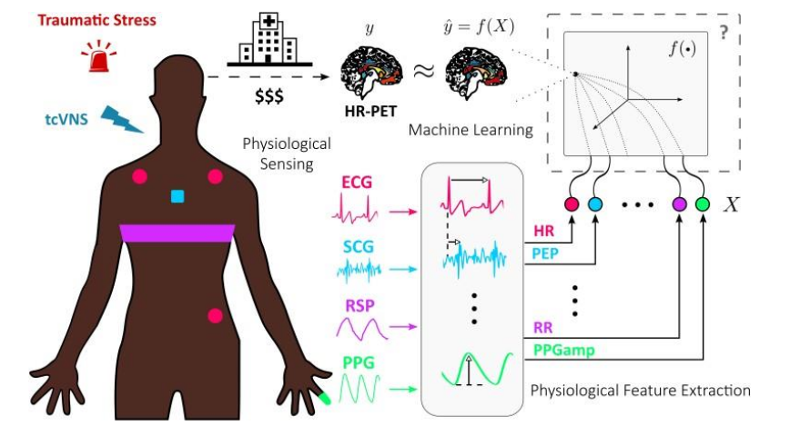

@article{
2015-TOG-terrainRL,
author = {Peng, Xue Bin and Berseth, Glen and van de Panne, Michiel},
title = {Dynamic Terrain Traversal Skills Using Reinforcement Learning},
journal = {ACM Trans. Graph.},
issue_date = {August 2015},
volume = {34},
number = {4},
month = jul,
year = {2015},
issn = {0730-0301},
pages = {80:1--80:11},
articleno = {80},
numpages = {11},
url = {http://doi.acm.org/10.1145/2766910},
doi = {10.1145/2766910},
acmid = {2766910},
publisher = {ACM}
}